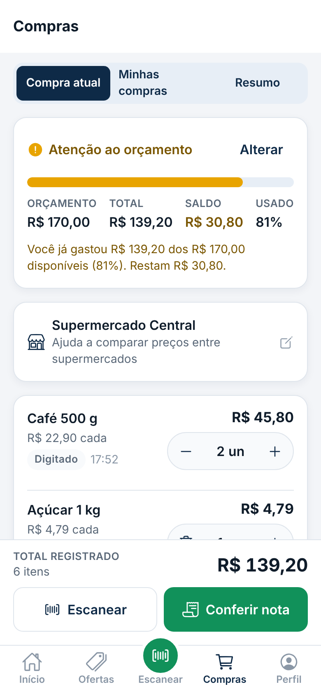
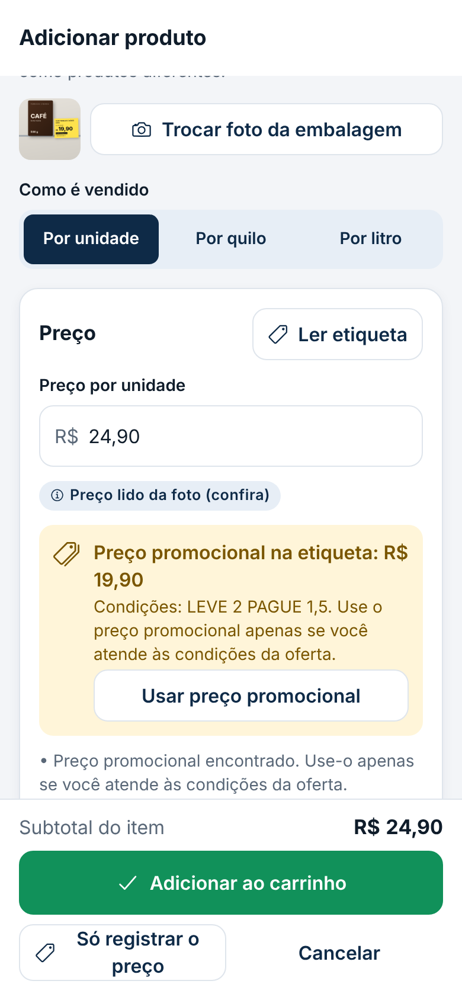
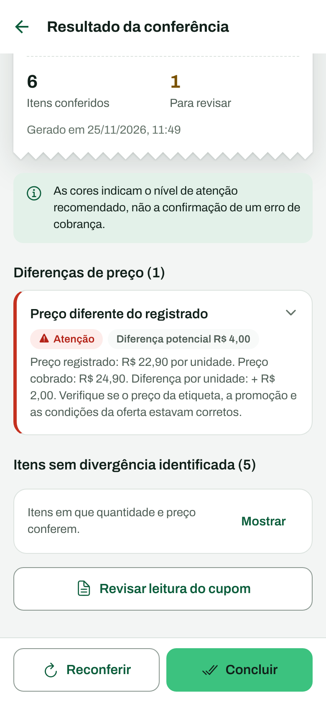
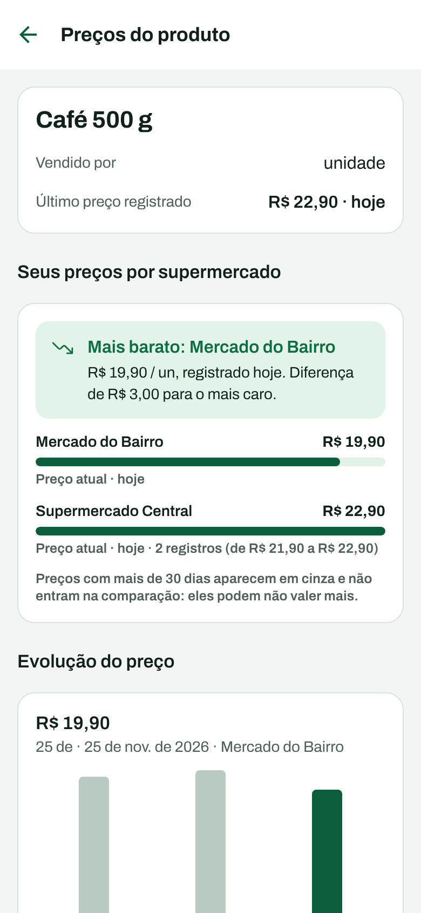
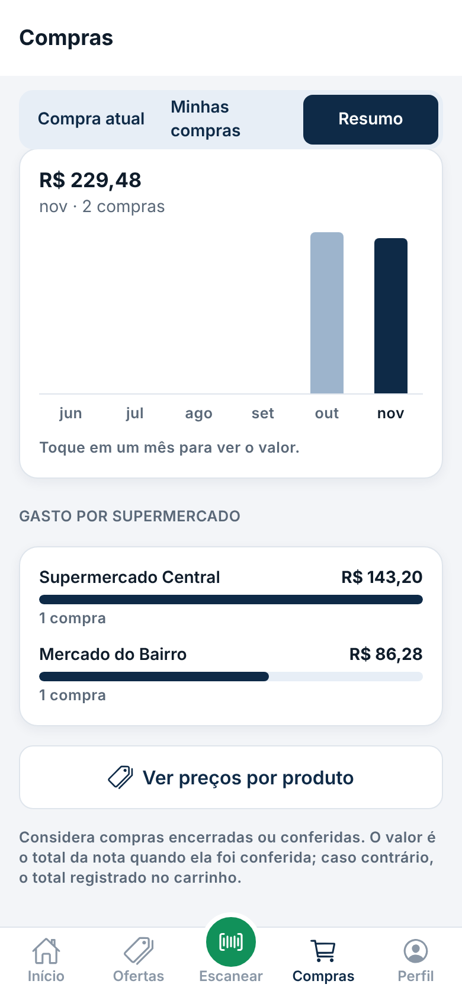

Escaneie o código de barras
A câmera lê o código, o produto entra no carrinho e o preço fica registrado naquele supermercado.
O Meu Carrin soma cada produto que entra no carrinho, avisa quando o orçamento começa a apertar e confere o cupom antes de você ir embora do mercado.
Grátis, sem cartão Começa sem criar conta Funciona sem internet
Nada de planilha em casa. O trabalho acontece enquanto você empurra o carrinho.
Antes de começar, informe o valor da compra. O app passa a mostrar o total, o saldo e a porcentagem usada a cada produto.
Leia o código de barras, fotografe o produto com a etiqueta ou digite. O preço fica guardado com o supermercado e a data.
Fotografe ou digite a nota. O app compara linha a linha com o que você registrou e aponta o que merece atenção.
A conta atualiza sozinha a cada produto, mudança de quantidade ou desconto. Quando o gasto passa de 75%, de 85% e do limite, o app avisa na hora — com o valor que ainda resta.

Produto sem código de barras, etiqueta de promoção, letra miúda com condição. Fotografe o produto junto com a etiqueta: a leitura automática separa nome, embalagem, preço normal e preço promocional — e mostra tudo para você conferir antes de salvar.

Depois do caixa, fotografe o cupom. O Meu Carrin compara cada linha com o que você registrou e mostra onde os valores não batem: preço diferente, quantidade a mais, item repetido ou produto que você não levou.

Tudo pensado para funcionar de pé, no corredor do mercado, com uma mão só.
A câmera lê o código, o produto entra no carrinho e o preço fica registrado naquele supermercado.
A leitura automática identifica nome, embalagem, preço normal e promocional — e você confere antes de salvar.
Compara o cupom com o seu carrinho e aponta diferenças de preço, quantidade e itens repetidos.
O histórico mostra onde cada produto saiu mais barato e como o preço andou ao longo do tempo.
Resumo do mês com total, número de compras, média, maior compra e comparação com o mês anterior.
Publique a promoção que encontrou e veja as que outras pessoas acharam perto de você.
Cada preço que você registra fica guardado com o supermercado e a data. O app mostra a diferença entre as lojas e avisa quando um preço já tem mais de 30 dias — preço velho não entra na comparação.


O app é gratuito. O que tem custo para nós é a leitura automática por foto, que usa inteligência artificial e é paga por imagem — por isso ela tem um limite no plano gratuito.
Tudo que não depende de leitura automática, sem limite.
Para quem usa a leitura por foto em toda compra.
Um aplicativo gratuito para quem faz compras de supermercado. Você registra os produtos enquanto compra, acompanha o quanto já gastou em relação ao que pretendia gastar e confere o cupom fiscal antes de ir embora.
Não para começar. Sem conta, tudo fica salvo no seu aparelho. A conta serve para ter cópia de segurança, abrir o histórico em outro celular e usar as partes que dependem da comunidade, como as ofertas.
Você fotografa ou digita o cupom. O app compara cada linha com os produtos que você registrou e aponta preço diferente do que estava na gôndola, quantidade a mais, item repetido e produto que não aparece na nota.
As cores indicam o nível de atenção, não a confirmação de um erro de cobrança. A conferência final, com o atendente, é sempre sua.
Você fotografa o produto junto com a etiqueta de preço. A imagem vai por conexão criptografada para o nosso servidor, que a envia ao serviço de leitura de texto e devolve o que foi lido: nome, embalagem, código de barras, preço normal e preço promocional.
O resultado aparece em um formulário para você conferir e corrigir antes de salvar. Nada é gravado sem a sua confirmação.
Não para o essencial. Registrar produtos, acompanhar o orçamento, conferir a nota digitada e ver o histórico funcionam sem conexão. Só a leitura automática de fotos e a sincronização entre aparelhos precisam de internet.
Sim. O plano gratuito inclui tudo, com um limite mensal apenas para a leitura automática por foto, que tem custo por imagem para nós. Um plano pago com limite maior está sendo preparado; quem já usa o app continua com o que tem hoje.
Suas compras ficam no seu aparelho. Com conta, são sincronizadas com acesso restrito a você por regras de segurança no banco de dados.
Os preços enviados para a base da comunidade são opcionais e não identificam quem informou. Os detalhes estão na política de privacidade.
O Meu Carrin é um site: abre direto no navegador, sem loja de aplicativos. No Android, abra pelo Chrome e use o menu ⋮ → Instalar app para ele ficar na tela de início e abrir em tela cheia.
No iPhone, abra pelo Safari e use Compartilhar → Adicionar à Tela de Início.
Abra o Meu Carrin antes de pegar o carrinho e saiba, a cada produto, quanto já deu.